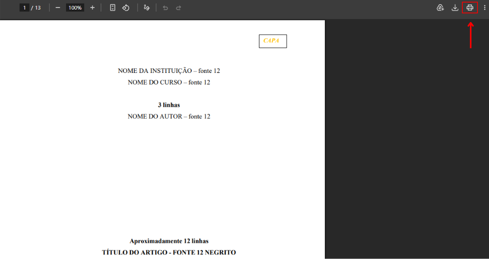
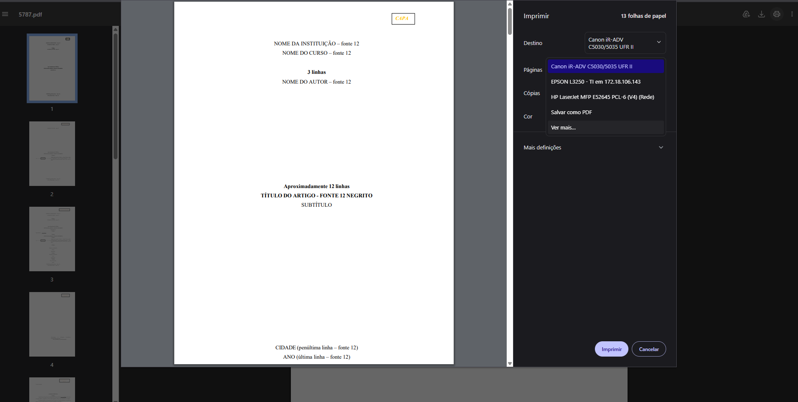
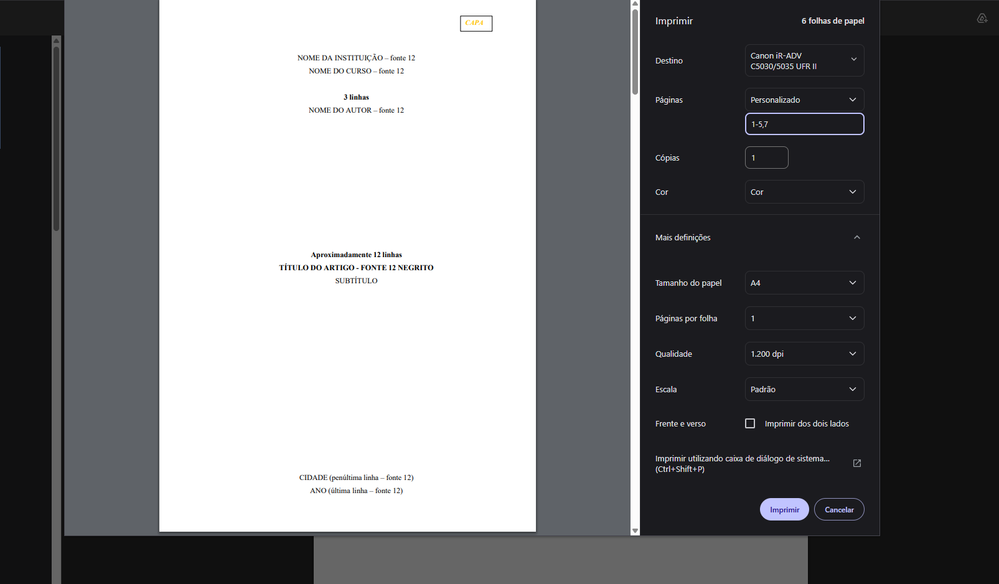
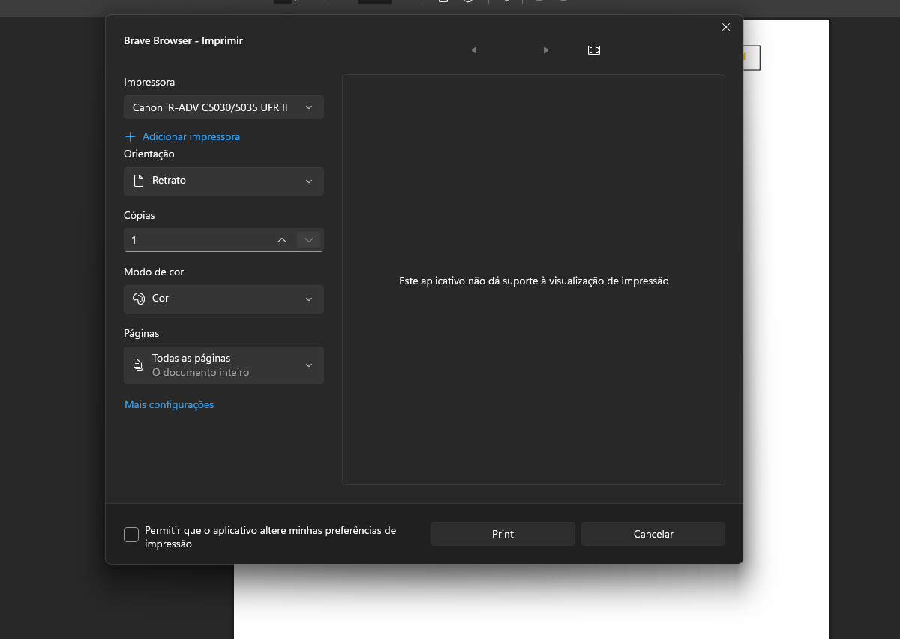
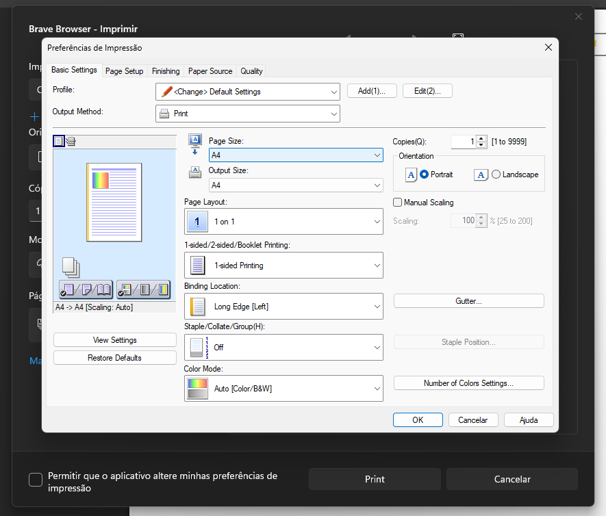
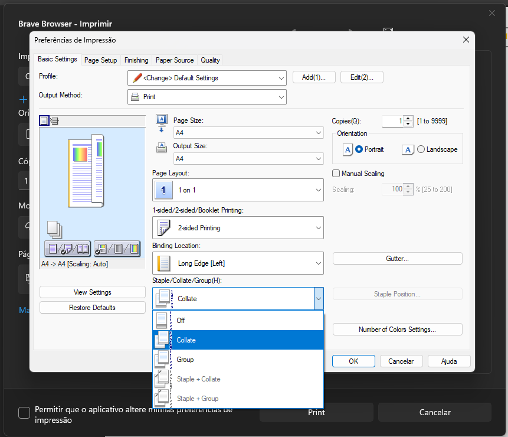
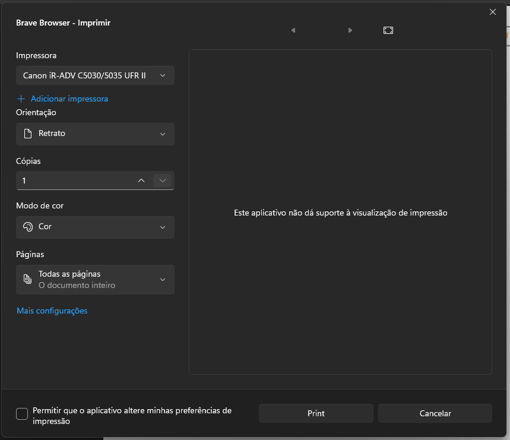

Tutorial
Canon iR-ADV C5035 / C5045
Impressão colorida, gavetas, frente e verso e organização correta das cópias.
1
Selecionar a Canon
Abra o documento, use Ctrl + P e localize a Canon iR-ADV na lista de impressoras.


2
Definir páginas e abrir preferências
Escolha páginas personalizadas e use o diálogo do sistema para acessar a Canon.



3
Layout, frente e verso e Collate
Use Collate para manter as cópias agrupadas na ordem correta.

4
Escolher gaveta e finalizar
Na aba Paper Source escolha a gaveta certa e finalize em OK e Print.
